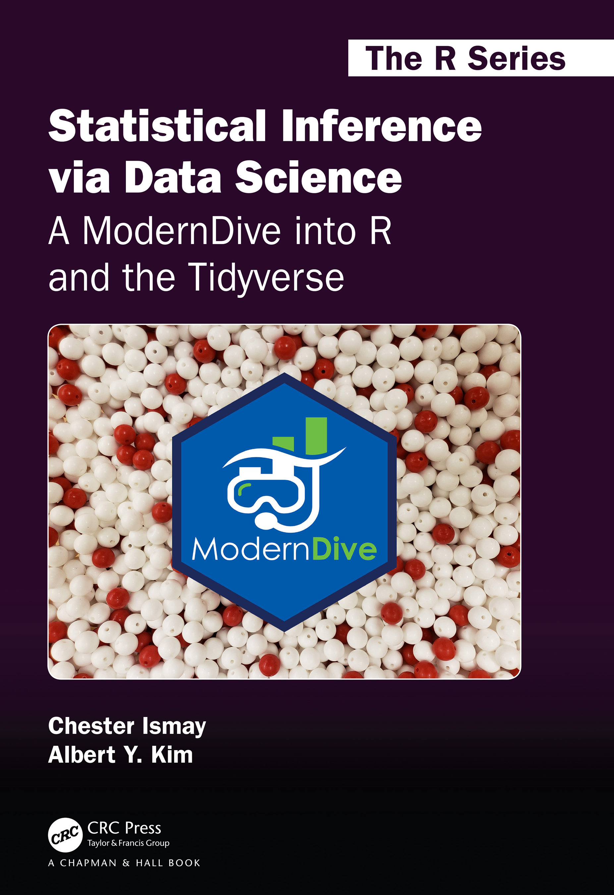

tidyverse 데이터 과학 도구를 사용하여 통계적 추론을 가르치기 위한 오픈 소스이며 완전히 재현 가능한 전자 교재입니다.
Author
Chester Ismay and Albert Y. Kim
Published
2026년 03월 03일

# New dplyr warning message when running group_by() %>% summarize() that is not# addressed in v1 (print edition). # See https://github.com/moderndive/ModernDive_book/issues/353# v2 TODO: Remove this option and fix group_by() section in Ch3options(dplyr.summarise.inform =FALSE)# Automatically create a bib database for R packageswrite_bib(c(.packages(), "bookdown", "broom", "dplyr", "dygraphs", "fivethirtyeight", "ggplot2", "ggplot2movies", "infer", "janitor", "kableExtra", "knitr", "moderndive", "nycflights13", "readr", "rmarkdown", "skimr", "tibble", "tidyr", "tidyverse", "webshot" ), here::here("bib", "packages.bib"))# Check that phantomjs is installed to create screenshots of appsif (is.null(webshot:::find_phantom())) { webshot::install_phantomjs()}
PhantomJS not found. You can install it with webshot::install_phantomjs(). If it is installed, please make sure the phantomjs executable can be found via the PATH variable.
phantomjs has been installed to /home/runner/bin
# Add all simulation results hereif (!dir.exists("rds")) {dir.create("rds")}# Create empty docs folder which will ultimately contain output# if (!dir.exists("docs")) {# dir.create("docs")# }# # # Make sure all images copy to docs folder# if (!dir.exists(here::here("docs", "images"))) {# dir.create(here::here("docs", "images"))# }# file.copy(from = "images", to = "docs", recursive = TRUE)# # # These steps are only needed for generating the moderndive.com page# # with relevant links. Not needed for PDF generation.# if (knitr::is_html_output()) {# # Add all purl()'ed chapter R scripts here# if (dir.exists(here::here("docs", "scripts"))) {# unlink(here::here("docs", "scripts"), recursive = TRUE)# }# if (!dir.exists(here::here("docs", "scripts"))) {# dir.create(here::here("docs", "scripts"))# }# }# Copy _redirects file to docs#file.copy("_redirects", to = "docs", overwrite = TRUE)
ModernDive에 오신 것을 환영합니다
이곳은 Statistical Inference via Data Science: A ModernDive into R and the Tidyverse의 웹사이트입니다! 이 사이트의 GitHub 저장소를 방문하거나 Amazon에서 책을 찾아보세요. 또한 할인 코드 ADC26을 사용하여 CRC Press에서 구매하실 수 있습니다.
ModernDive.com에서 이용 가능한 Statistical Inference via Data Science: A ModernDive into R and the Tidyverse의 GitHub 저장소 페이지에 오신 것을 환영합니다. CRC Press 인쇄본은 웹사이트에서 구매하실 수 있습니다.
1.1 이 저장소의 내용
ModernDive는 RStudio의 bookdown 패키지를 사용하여 제작되었습니다. bookdown 사용법에 대한 자세한 내용은 bookdown.org를 참조하세요. 직접 책을 빌드하고 싶다면 먼저 install.packages("bookdown")을 통해 bookdown 패키지를 설치해야 합니다.
현재 버전의 bookdown 소스 코드는 이 저장소의 master 브랜치에 있습니다.
ModernDive의 모든 이전 릴리스 버전의 bookdown 소스 코드는 Releases 페이지에서 접근할 수 있습니다. 버전 간의 모든 변경 사항 요약은 NEWS.md에서 확인할 수 있습니다.